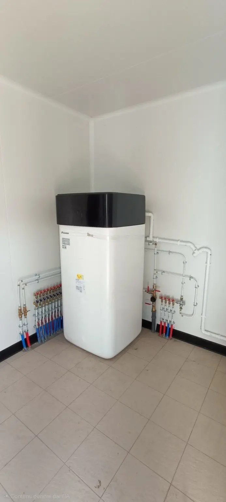
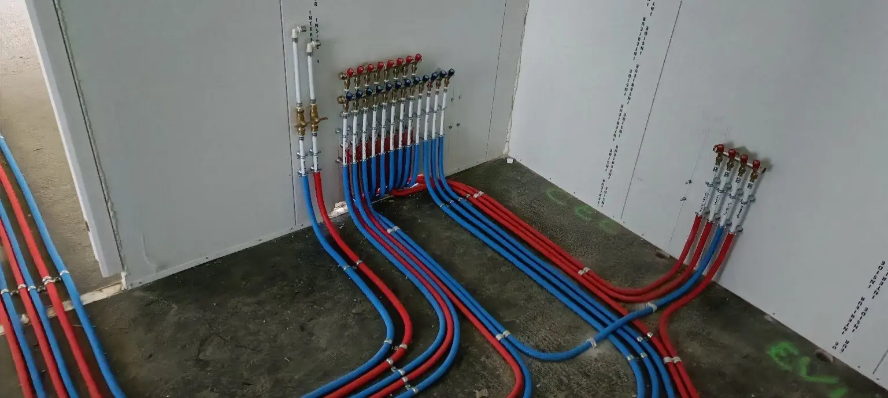
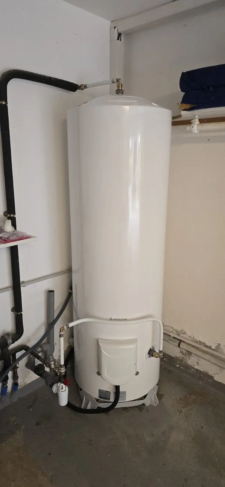
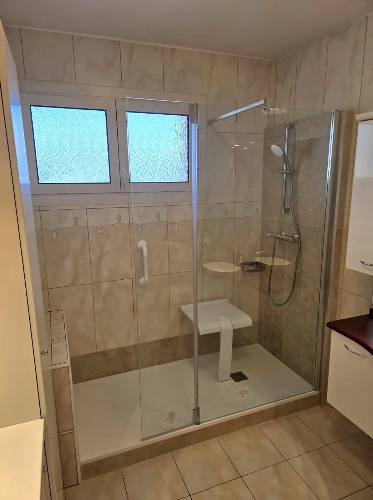
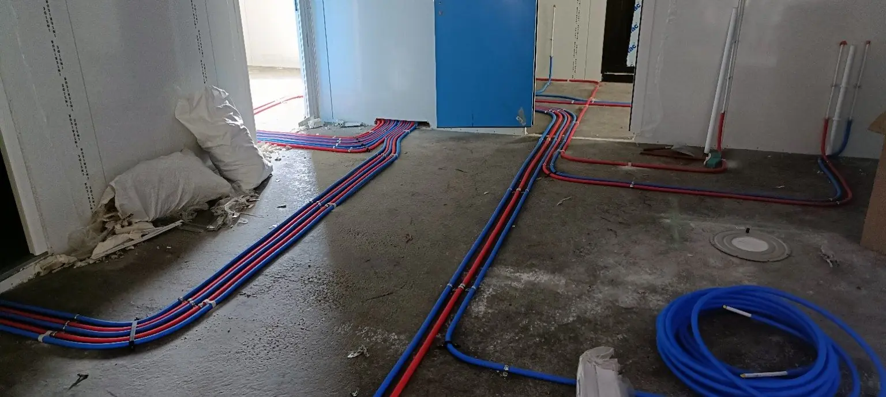

Recherche de fuite
Tests de pression enregistrés, isolement EF/EC, contrôles ciblés, photos et rapport possible pour assurance, syndic ou propriétaire.
Découvrir le serviceArtisan plombier chauffagiste • 33 ans d’expérience • Ajaccio
Dépannage plomberie, recherche de fuite, chauffe-eau et rénovation. Un interlocuteur unique, des explications claires et des travaux contrôlés avant le départ.
Adresse + problème + quelques photos : la demande est préparée avant le déplacement.

Fuite d’eau
Coupez l’arrivée d’eau si possible et appelez directement CC-2A. Les demandes urgentes sont prioritaires selon disponibilité pendant les horaires d’intervention.
Les prestations
CC-2A intervient chez les particuliers, propriétaires, agences, conciergeries et syndics pour les besoins courants comme pour les travaux plus techniques.
Tests de pression enregistrés, isolement EF/EC, contrôles ciblés, photos et rapport possible pour assurance, syndic ou propriétaire.
Découvrir le serviceFuite d’eau, WC, robinetterie, siphon, flexible, vanne ou petite réparation sanitaire.
Voir le dépannageDépose, pose, groupe de sécurité, raccordements, mise en eau et contrôle d’étanchéité.
Voir les chauffe-eauÉvier, lavabo, douche, baignoire, WC et évacuation accessible avec contrôle d’écoulement.
Voir le débouchageRadiateurs à eau, robinets, fuites et reprises de circuits hydrauliques, avec remise en eau et contrôle selon l’installation.
Voir le chauffageSuivi locataire, compte rendu, photos, devis lisibles et organisation récurrente par logement.
Découvrir l’offreTravaux réalisés




Une méthode simple
Le problème est cadré, la solution est expliquée et l’installation est contrôlée. Quand le dossier le demande, les informations utiles sont conservées pour le devis, la facture ou le rapport.
Préparer votre demandeAdresse, type de panne, accès et photos utiles avant le déplacement.
Contrôles ciblés et solution proposée sans jargon inutile.
Protection, réparation ou installation, nettoyage, mise en eau et essais.
Compte rendu, photos, devis, facture ou rapport lorsque la situation le nécessite.
Le standard CC-2A
Une intervention professionnelle ne s’arrête pas au raccord. Le suivi doit être compréhensible pour le client, le propriétaire, l’assurance ou le gestionnaire.
Prestations détaillées, limites du chantier et réserves indiquées avant travaux.
Objet précis, détail de l’intervention et présentation homogène d’un dossier à l’autre.
Constats, essais, photos et préconisations pour assurance, syndic, bailleur ou propriétaire selon le dossier.
Références, dimensions et fournitures importantes conservées lorsque cela facilite le suivi ou une intervention future.
Du premier appel au dernier essai, le dossier reste suivi par le même artisan.
Les travaux réalisés et les suites éventuelles sont clairement distingués pour éviter les malentendus.
Recherche de fuite
Contrôle des points sensibles, essais ciblés, mise en eau ou contrôle de pression selon la configuration. Un compte rendu photo peut être préparé pour votre assurance, syndic ou propriétaire.
Voir les essais et rapports réels« Un artisan rigoureux, efficace, à l’écoute et bienveillant. Une totale confiance. »
« Très réactif, un travail impeccable. Je recommande sans hésitation. »
« Rendez-vous rapide et bien respecté, travail très soigné, prix compétitif. »
Repères tarifaires
Le prix exact dépend de l’accès, des pièces, du déplacement et du temps sur place. Les photos permettent souvent de mieux cadrer la demande.
Selon zone et disponibilité.
Rapport selon demande • déplacement selon zone.
Volume, accès, dépose et raccordements.
Équipement et état de l’évacuation.
Agences, propriétaires, conciergeries
Interventions locataires, suivi par message, comptes rendus, photos et documents clairs.
Zone d’intervention
Déplacement hors zone sur demande et selon barème.
Questions fréquentes
Oui. Une vue large puis des photos rapprochées de la fuite, du chauffe-eau ou des raccords permettent de mieux préparer l’intervention.
Selon la situation, un rapport photo ou un compte rendu technique peut être préparé pour l’assurance, le propriétaire, le syndic ou l’agence.
Oui. CC-2A peut organiser les interventions locataires, le suivi par message et les rapports photos.
Parlons de votre besoin
Appelez directement ou envoyez une description avec quelques photos. Vous recevez une première orientation claire et, après intervention, vous savez ce qui a été fait et ce qui reste éventuellement à prévoir.